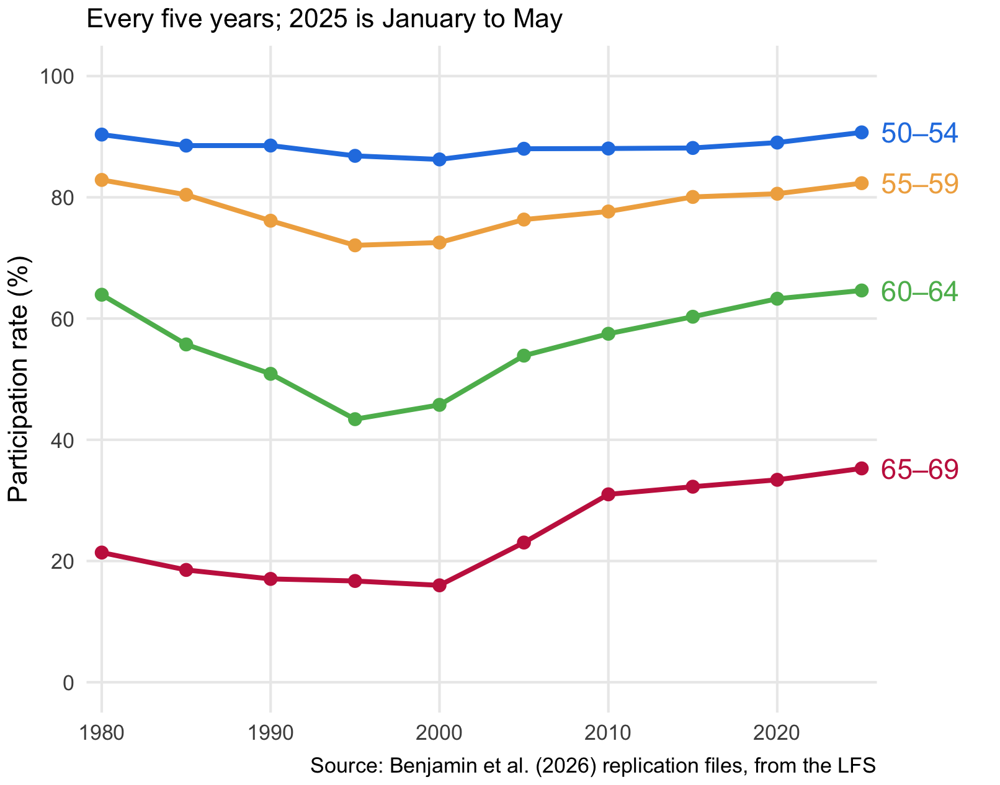
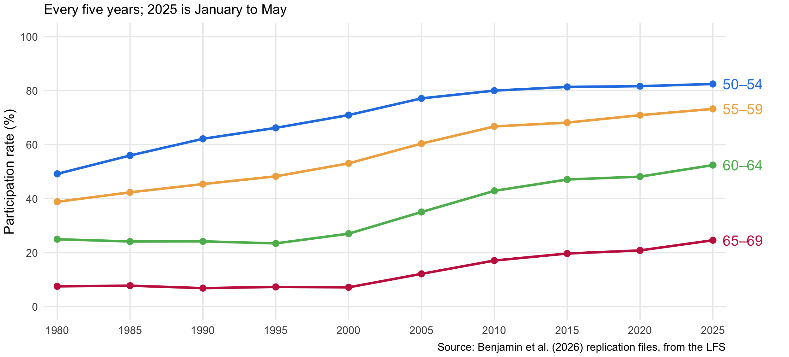
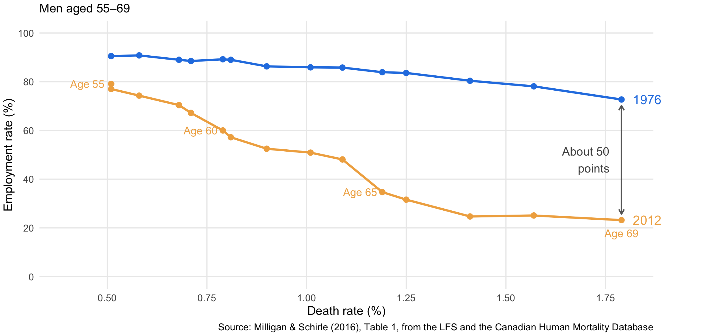
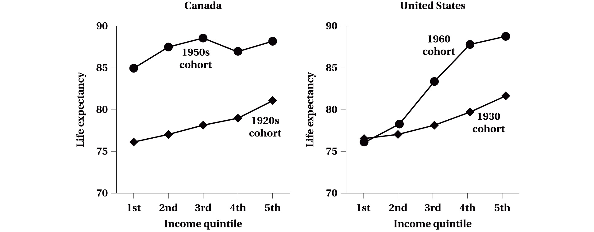
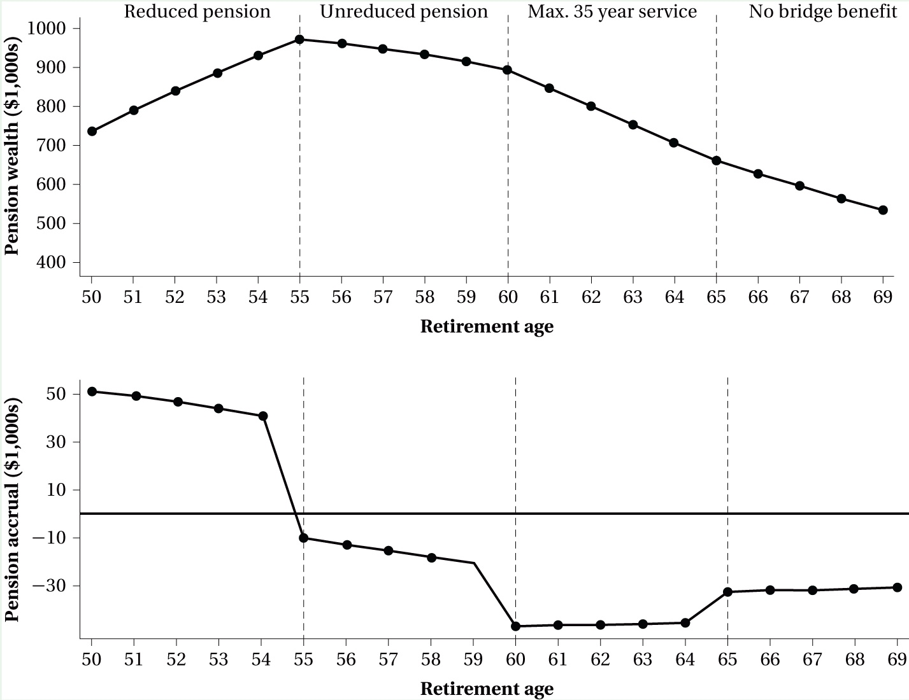
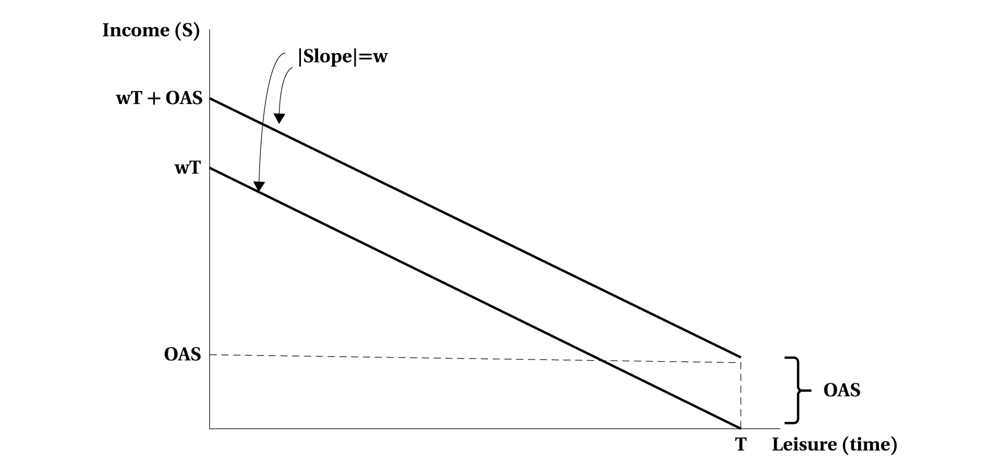
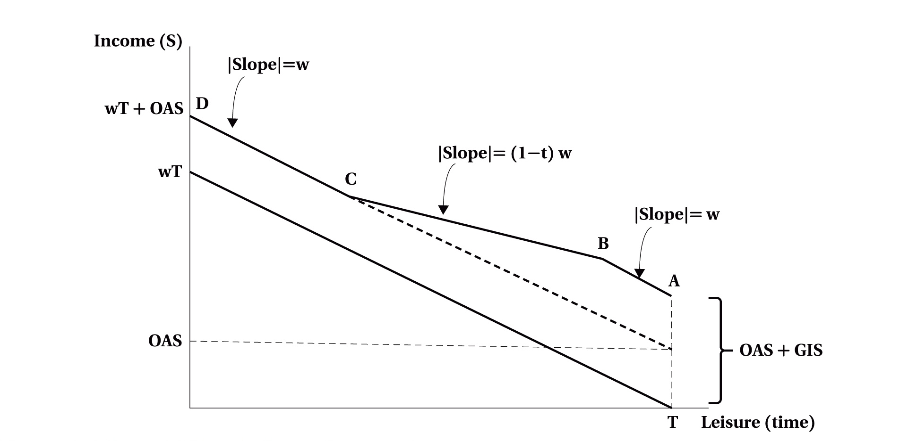

Labour Supply and Later Career Decisions
EC306- Wages and Employment
Justin Smith
Wilfrid Laurier University
Fall 2026

Goals of This Section
Goals of This Section
In this section we will:
- Describe how work at older ages has changed for women and men, and what people do with their time once they stop working for pay
- Explain mandatory retirement and Canada’s three-tier pension system
- Ask how much more older Canadians could work, given their health
- Show how defined benefit pension plans reward retiring at particular ages
- Analyze how OAS, GIS, and the C/QPP change the incentive to work at older ages
Labour Supply and Age
What Is Retirement?
- Usually it means leaving the labour force for good at an older age
- But it can also mean:
- Cutting hours a lot
- Moving to a less demanding job or occupation
- Leaving a career job, then coming back part-time
- The move can be sudden or spread over years
- For someone whose work was mostly unpaid, retirement may change very little
- Because it is so hard to pin down, we usually study specific outcomes instead: participation, employment, hours, and time use
Key Definition
Retirement decisions: the series of work and saving choices, made over a whole lifetime, that determine when and how a person moves out of paid work
Participation at Older Ages: Women
Participation of women aged 60–64 held near 24% until the mid-1990s, then rose to 52% by 2025

Participation at Older Ages: Men
- Men aged 60–64 went from 64% in 1980 to 43% in 1995, then back to 65% by 2025
- Men aged 65–69 doubled from 17% in 1995 to 35% in 2025, the highest in the whole series
- Schirle (2008); Milligan & Schirle (2019): much of the turnaround came from wives working more
- Husbands, often a little older, put off retiring while their wives kept working
Retirement Is Not Just Leisure
- People over 65 spend much more time on leisure and socializing than anyone younger (Statistics Canada 2025)
- But many older people, retired or not, also do a lot of unpaid work
- Caring for adults: 18% of people aged 60–69 regularly care for an elderly person, often a spouse or parent (Milligan & Schirle 2025a)
- Daughters take on the main caregiving role more often than sons
- Unpaid elder care is worth about 1.3% of GDP; formal care costs 1.8%, a share expected to rise through the 2030s
- Caring for grandchildren: 10 years after the first grandchild arrives, earnings are 16% lower for grandmothers and 15% lower for grandfathers (Karademir et al. 2026)
- Retirement is better seen as shifting time from paid work toward a range of nonmarket activities
iClicker Question
Participation of women aged 60–64 stayed near 24% from 1980 to 1995, then rose to 52% by 2025. Which explanation best fits that timing?
A) An age effect: women work more as they get older
B) Women’s health at 60 improved suddenly in the mid-1990s
C) A cohort effect: women born from the mid-1930s on had worked more all their careers, and began turning 60 in the mid-1990s
D) An added worker effect: husbands were retiring earlier, so wives worked to replace the income
E) Mandatory retirement was abolished in the mid-1990s
Retirement Policies in Canada
Mandatory Retirement Provisions
Key Definition
Mandatory retirement provisions: rules in an employer’s personnel policy or a collective agreement that end a worker’s job at a set age
- Automatic: the worker must leave at that age
- Compulsory: the employer can make the worker leave, but can also keep them on, usually year to year
- The name misleads: the rule ended the job, not the working life. No law ever required anyone to leave the labour force
- Allowed for many years, as long as no one was forced out before 65
- Treated as age discrimination from the 1970s on, and gone from almost every Canadian jurisdiction by December 2012
- Exceptions remain:
- Bona fide occupational requirements, such as jobs where physical dexterity matters (Gomez & Gunderson 2011)
- Partners in large law firms
Did Mandatory Retirement Matter?
- Warman & Worswick (2010): professors stayed longer where mandatory retirement was banned; there, about 23% of those working at 64 were still at the same university at 72
- Reid (1988); Shannon & Grierson (2004): participation barely changed in Manitoba and Quebec, which banned it first
- Grant & Townsend (2013): it was harder on immigrants, who arrive later and have less time to build pensions and savings
- Messacar & Kocourek (2019): using the timing of the bans across provinces
- Mandatory retirement was rarely used, even before the bans
- Banning it raised some workers’ retirement age, but fewer retired partially, which offset some of that
- No detectable effect on health, happiness, or financial security
The Evidence
Mixed, and the effects mostly small
What a Ban Changes for Employers
- Gunderson (1983): the reasons mandatory retirement existed in the first place predict the side effects of a ban
Key Definition
Deferred compensation: pay held back early in a job and paid later, so wages run below productivity when young and above it when older (Chapter 18)
- A set retirement date made deferred compensation workable. Without one:
- Retirement timing is less predictable, and workers have less reason to stay with the employer
- Older workers face more monitoring and evaluation
- Younger workers have fewer promotion opportunities
- Defined benefit pension plans, which went hand in hand with mandatory retirement, may fade
- Less training, if deferred wages no longer keep trainees around
- There is little research testing these predictions
Canada’s Three-Tier Pension System
| Tier | Programs | Paid for by | Benefit | Can start |
|---|---|---|---|---|
| 1. Income support | Old Age Security (OAS), Guaranteed Income Supplement (GIS) | General tax revenue, year by year | OAS a flat amount; GIS tested on income | 65 (OAS can wait to 70) |
| 2. Social insurance | Canada and Quebec Pension Plans (C/QPP) | Payroll contributions by workers and employers | Tied to past earnings | Between 60 and 70 |
| 3. Private | Employer pension plans, RRSPs, TFSAs | Employers, employees, individuals | Set by the plan, or by what was saved | Set by the plan; savings any time |
Key Definition
Pay-as-you-go: a pension paid out of current revenue, so today’s taxes or contributions pay today’s benefits, instead of from funds set aside in advance
- Tier 3 reach: employer plans covered 33% of the labour force in 2024; 21% of tax filers paid into an RRSP in 2023, with a median of $4,000
Tier 1: OAS and GIS
Key Definitions
Old Age Security (OAS): a monthly pension paid to nearly everyone aged 65 and over who meets residency requirements
Guaranteed Income Supplement (GIS): an income-tested supplement to OAS for seniors with low income
OAS
- A demogrant: paid whatever your need or work history (Chapter 4)
- Up to $727.67 a month at 65–74 (June 2025), and 10% more at 75+
- Recovered from high earners: 15% of income above $86,912
- Can start any time from 65 to 70; waiting raises the monthly amount
GIS
- Paid on top of OAS, based on family income
- Up to $1,086.88 a month for a single person (June 2025)
- Falls as other income rises, so it works like a negative income tax (Chapter 4)
Tier 2: Canada and Quebec Pension Plans
Key Definitions
Canada and Quebec Pension Plans (C/QPP): social insurance pensions, paid for by contributions from workers and employers, that pay a monthly benefit based on past earnings
Longevity risk: the risk of outliving your savings
- Contributions are a payroll tax on all workers, employees and self-employed alike
- Partly pre-funded (some contributions are invested to pay future benefits), partly pay-as-you-go
- Higher earnings over your career mean a higher pension: after the recent expansion, up to one-third of average earnings (Schirle 2024)
- Up to $1,433 a month for someone starting at 65 in 2025
- Can start any time from 60 to 70
- Paid for as long as you live, so it insures against longevity risk
There Is No “Retirement Age”
- None of these programs requires you to stop working
- You can work and collect OAS or the C/QPP at the same time
- What they have instead: ages at which you become eligible, and a choice of when to take up benefits
- 65 is often called the “normal” or “standard” age, but it’s only the benchmark used to calculate benefits
- Benchmarks still matter. Glenzer, Michaud & Staubli (2025): in a survey experiment, raising the benchmark age, without changing the benefit at any age, made people choose to claim later
- Sometimes at a financial cost to themselves
- The rules affect behaviour by changing nonlabour income or the price of leisure, which is where the rest of this chapter goes
iClicker Question
Dev turns 65 this year. He has lived in Canada all his adult life and plans to keep working full time at his $60,000 job. Which is true?
A) He can collect OAS and start his CPP pension while he keeps working
B) He can’t collect OAS or the CPP until he stops working
C) He gets OAS only if his income is low enough to qualify for the GIS
D) He must stop working at 65, the standard retirement age
E) He can start his CPP now, but OAS waits until he retires
Health Capacity to Work
Health and Work at Older Ages
- Older men work much more today than they did 30 years ago (Figure 7.1)
- Health tends to decline with age, which can reduce work in two ways:
- Opportunities: lower productivity means lower wage offers
- Preferences: poor health makes time away from paid work more valuable
- Schirle (2010): a decline in health raises the chance of retiring, other things equal
- But health has improved: healthy life expectancy has risen along with life expectancy
- So do older men in the same health work as much as they used to?
- Measuring health is hard, so we use a simple proxy: the death rate at each age (Wise 2017; Milligan & Schirle 2018)
Key Definition
Health capacity to work: how much a person could work, given their health
Same Health, Less Work
Each 2012 point is men of one age; the 1976 line shows how much men with the same death rate worked in 1976

Unused Capacity and Policy
- Milligan & Schirle (2016): if men in 2012 worked as much as 1976 men with the same death rates, they would work about 5 more years between 55 and 69
- Since 2012, health has kept improving faster than work:
- By 2023, death rates were down to 1.2% at 65 and 1.6% at 69
- Employment of men aged 65–69 only rose to 34%, far below 1976 men in similar health
- More leisure isn’t necessarily a problem: people value it
- But it raises policy questions:
- Raise the age for OAS and GIS? Announced in 2012 (65 to 67), and cancelled before it took effect
- Change how much the C/QPP pays for starting later (last section of this chapter)
- Make it easier to work flexibly at older ages
Health Capacity Differs Across Groups
- Women: the apparent unused capacity is much smaller, about 2 years (Milligan & Schirle 2016), but hard to interpret
- Women’s roles have changed so much since 1976 that the comparison with 1976 means less
- Region: men in Atlantic Canada are in worse health than men in Ontario, yet work more at each death rate
- So their “unused” capacity to work is much lower
- Income: people who earn more live longer, so capacity to work at older ages is unequal as well (next slide)
Life Expectancy Rises with Earnings

Source: Benjamin et al. (2026), Figure 7.3, from Milligan & Schirle (2021) and National Academies (2015)
- Expected age at death for men who reach 50, by earnings quintile
- Canada: for men born in the 1920s, 5 years between the bottom and top quintiles; for the 1950s cohort, longer lives and a smaller gap
- United States: similar to Canada for men born in 1930, but nearly 13 years for men born in 1960
- More on inequality: Chapter 13
Key Definition
Quintile: one-fifth of a group ranked from lowest to highest; the 1st quintile is the lowest-earning 20%
iClicker Question
Suppose death rates at every age keep falling, but the employment rate at each age stays where it was in 2012. By Milligan and Schirle’s measure, older men’s unused capacity to work:
A) Falls, because healthier men are able to work more
B) Stays the same, because employment at each age hasn’t changed
C) Falls, because each age’s point moves closer to the 1976 line
D) Rises, because each age now has the health of younger men in 1976, who worked more
E) Stays the same, because it depends only on 1976 employment rates
Employer Pensions and Retirement
Employer-Sponsored Pension Plans
Key Definitions
Employer-sponsored pension plans: pensions set up by an employer, also called registered pension plans (RPPs); a form of deferred compensation
Defined benefit (DB) plans: pay a set monthly benefit for life, from a formula
Defined contribution (DC) plans: pay whatever the contributions and their investment returns add up to
- 41% of employees belonged to a registered pension plan in the early 2020s (Schirle 2023)
Defined benefit
- The most common: about two-thirds of members
- Most are earnings-based: years of service times a measure of average earnings
- Flat-benefit plans pay a set amount per year of service, and are common in unions
Defined contribution
- Under one-fifth of members
- Benefits depend on what was paid in and how the investments did
- Most common in small establishments
The Shift from DB to DC
- Defined contribution plans are growing and defined benefit plans shrinking. Why?
- Regulation: DB plans are heavily regulated
- Surpluses: uncertainty and conflict over who owns the surplus assets DB plans often build up
- Longer lives: a DB plan pays for life, so rising life expectancy adds to its cost and risk
- Who bears the risk:
| Defined benefit | Defined contribution | |
|---|---|---|
| Investment risk | The plan, and so the employer | The worker |
| Longevity risk | The plan, and so the employer | The worker |
| Benefit known in advance | Yes | No |
Pension Wealth and Pension Accrual
Key Definitions
Pension wealth: the expected present value of all future pension payments, discounted for interest and for the chance of surviving to collect them
Pension accrual: the change in pension wealth from working one more year
- One more year of work is a trade-off:
- Gain: another year of service, or a smaller early-retirement reduction
- Cost: a year of pension payments given up
- Example (Exhibit 7.2): a member of the federal Public Service Pension Plan
- 50 years old in 2025, with 25 years of service and average (best) earnings of $70,000
- Pension: 2% of earnings for each year of service, unreduced from 55 with 30 years of service
- Can retire at 50, but the pension is cut 5% for each year short of 30 years of service
Picking the Retirement Age

Source: Benjamin et al. (2026), Exhibit 7.2
- Pension wealth peaks at 55, the first age with an unreduced pension
- Before 55: each extra year shrinks the early-retirement cut, so accrual is positive
- 55 to 60: more service, but not enough to make up a year of lost payments: accrual is negative
- After 60: service is capped at 35 years, so accrual falls further
- After 65: slightly less negative, because the bridge benefit is no longer being given up
Note
Working past the first unreduced age carries an implicit tax. It’s common in DB plans (Pesando & Gunderson 1991)
The Option Value Model
- Stock & Wise (1990): once you retire and take your pension, you rarely go back to that employer
- So each year, the choice is to retire now, or keep working and keep the option to retire later
- Keep working as long as the expected present value of continuing beats the expected present value of retiring now
- In Exhibit 7.2, most of that comparison is the pension: a higher monthly benefit later against the payments given up now
- Without mandatory retirement, pension design is the employer’s main tool for managing when people retire
- Generous early-retirement offers can replace layoffs, and open up promotions for younger workers
Key Definition
Option value: the value of keeping the choice to retire at a later, better time, instead of retiring now
iClicker Question
A defined benefit plan pays an unreduced pension from 60, and cuts the pension for each year someone retires before 60. After 60, another year of service raises the pension, but by less than a year of payments is worth. Pension wealth peaks at ___, and pension accrual at 62 is ___.
A) 65; positive
B) 60; negative
C) 60; positive
D) 70, since a longer career always means a bigger monthly pension; positive
E) 60; zero
Public Pensions and Labour Supply Decisions
OAS in the Static Model

Source: Benjamin et al. (2026), Figure 7.4(a)
- Taking up public pensions doesn’t require leaving the labour force, so the static model of Chapter 3 is a good start
- OAS is a demogrant: the budget constraint shifts up by the OAS amount at every number of hours
- A pure income effect: people already working cut their hours, and the higher reservation wage leads some to leave the labour force (Chapter 4)
- But people see OAS coming (Chapter 6), so turning 65 isn’t news; an unexpected or temporary increase is
GIS in the Static Model

Source: Benjamin et al. (2026), Figure 7.4(b)
- A person whose only other income is OAS. Not working, they get OAS plus the full GIS, at A
- A to B: the first $5,000 of earnings is exempt, so the slope is still \(w\)
- B to C: GIS falls by 50 cents for each dollar earned, so the slope is \((1-t)w\), with \(t = 0.5\)
- C to D: the GIS is used up, so the slope is back to \(w\)
- The dashed line is the constraint with OAS alone, without the GIS
- Income and substitution effects both mean less work, as with a negative income tax (Chapter 4)
- The exemption helps those who work a little; work incentives only matter for people healthy enough to work
iClicker Question
Rosa, 67, receives OAS and the GIS and earns $8,000 a year, so she is between B and C in the book’s Figure 7.4(b). If the GIS clawback rate fell from 50% to 25%, the effects on her hours would be:
A) Both effects toward more work
B) Both effects toward less work
C) Substitution effect toward less work, income effect toward more work
D) No effect, because her first $5,000 of earnings is exempt
E) Substitution effect toward more work, income effect toward less work, so the net effect is ambiguous
When to Start the C/QPP
- Taking up the C/QPP is a dynamic decision, best seen with the option value approach
- The monthly benefit depends permanently on when you start:
- 7.2% less for each year before 65
- 8.4% more for each year after 65
| Start at | 60 | 65 | 70 |
|---|---|---|---|
| Monthly benefit, for someone entitled to $1,000 at 65 | $640 | $1,000 | $1,420 |
- For the average person, these adjustments are close to actuarially fair, so there’s little to gain from waiting (Laurin, Milligan & Schirle 2012)
Key Definition
Actuarially fair: an adjustment that leaves the expected present value of lifetime benefits the same whatever age you start
Where Public Pensions Discourage Work
- For most people, the C/QPP’s rules on timing have little effect on behaviour (next slide)
- For low-income seniors, though, the programs interact:
- Delaying the C/QPP raises the monthly benefit, but each extra dollar of CPP cuts the GIS by 50 cents
- So waiting, or working longer, carries an implicit tax
- Milligan & Schirle (2025b): the implicit tax on working at older ages has fallen a lot over time, but still has a significant effect on retirement decisions
- Baker, Gruber & Milligan (2003): the same approach for Canada’s income security programs, with the same conclusion
- Canada’s work disincentives are small next to those in many other countries (Börsch-Supan & Coile 2025)
A Natural Experiment: QPP vs CPP
- In the 1980s, early retirement (before 65) was rising in most countries, just as pension plans became more generous, especially for retiring early
- Tempting to link the two, but it could be correlation, not causation
- The C/QPP’s split provides a test:
- From 1984, the QPP paid a reduced pension from age 60
- The CPP didn’t allow that until 1987
- Baker & Benjamin (1999): no sign that early retirement took off in Quebec during those three years
- Most people who took early benefits would have retired anyway, because of poor job prospects or generous private pensions
Two Plans, One Experiment
The CPP and QPP have nearly identical rules. When they briefly differ, researchers can compare Quebec with the rest of Canada before and after
iClicker Question
Suppose OAS were paid only to seniors who did no paid work at all. Compared with today’s OAS, which is most likely?
A) No change in work, since the OAS amount is the same either way
B) Some seniors who would have worked a few hours stop entirely, since a little work would cost them the whole OAS
C) Fewer people working full time, but no change for people working a few hours
D) Lower OAS spending, with no effect on anyone’s decision to work
E) The same effect on work as today’s GIS clawback
Summary
Summary
Labour supply and age:
- Older women’s participation has risen steadily; older men’s fell until the mid-1990s and has risen since. Retirement shifts time toward leisure and toward caring for family
Retirement policies in Canada:
- Mandatory retirement is largely gone, and the evidence on its effects is mixed. Pensions come in three tiers: OAS and GIS, the C/QPP, and private plans and savings
Health capacity to work:
- Older men work much less than men in the same health did in 1976
Employer pensions:
- Defined benefit pension wealth peaks at the first unreduced age, which rewards retiring then
Public pensions:
- OAS is a demogrant and the GIS works like a negative income tax; C/QPP timing is close to actuarially fair, but interactions with the GIS can tax work for low-income seniors
References
- Baker, M., & Benjamin, D. (1999). Early retirement provisions and the labor force behavior of older men: Evidence from Canada. Journal of Labor Economics, 17(4), 724–756.
- Baker, M., Gruber, J., & Milligan, K. (2003). The retirement incentive effects of Canada’s income security programs. Canadian Journal of Economics, 36(2), 261–290.
- Benjamin, D., Foley, K., Gunderson, M., Lemieux, T., Schirle, T., & Skuterud, M. (2026). Labour Market Economics, 2026 Release. McGraw Hill. Chapter 7, figure bank, and Chapter 6 replication files.
- Börsch-Supan, A., & Coile, C. (Eds.). (2025). Social security programs and retirement around the world: The effects of reforms on retirement behavior. University of Chicago Press.
- Glenzer, F., Michaud, P.-C., & Staubli, S. (2025). Frames, incentives, and education: Effectiveness of interventions to delay public pension claiming. Journal of Public Economics, 248, 105419. https://doi.org/10.1016/j.jpubeco.2025.105419
- Gomez, R., & Gunderson, M. (2011). For whom the retirement bell tolls: Accounting for changes in the expected age of retirement and the incidence of mandatory retirement in Canada. Canadian Public Policy, 37(4), 513–539.
References (cont.)
- Government of Canada. (2026). Old Age Security payment amounts; CPP retirement pension: How much you could receive; CPP contribution rates, maximums and exemptions. canada.ca.
- Grant, H., & Townsend, J. (2013). Mandatory retirement and the employment rights of elderly Canadian immigrants. Canadian Public Policy, 39(1), 135–152.
- Gunderson, M. (1983). Mandatory retirement and personnel policies. Columbia Journal of World Business (Summer), 8–15.
- Karademir, S., Laliberté, J.-W., & Staubli, S. (2026). The multigenerational impact of children and childcare policies. Journal of Labor Economics, 44(1), 189–227. https://doi.org/10.1086/732358
- Laurin, A., Milligan, K., & Schirle, T. (2012). Comparing nest eggs: How CPP reform affects retirement choices. C.D. Howe Institute Commentary No. 352.
- McCormick v. Fasken Martineau DuMoulin LLP, 2014 SCC 39.
References (cont.)
- Messacar, D., & Kocourek, P. (2019). Pathways to retirement, well-being, and mandatory retirement rules: Evidence from Canadian reforms. Journal of Labor Research, 40, 249–275.
- Milligan, K., & Schirle, T. (2016). The health and capacity to work of older men and women in Canada. LCERPA Working Paper No. 2016-3.
- Milligan, K., & Schirle, T. (2018). Health and capacity to work of older Canadians: Gender and regional dimensions. Canadian Public Policy, 44(2), 159–172.
- Milligan, K., & Schirle, T. (2019). The labor force participation rates of older men in Canada. In C. Coile, K. Milligan, & D. A. Wise (Eds.), Social security programs around the world: Working longer (pp. 51–65). University of Chicago Press.
- Milligan, K., & Schirle, T. (2021). The evolution of longevity: Evidence from Canada. Canadian Journal of Economics, 54(1), 164–192.
- Milligan, K., & Schirle, T. (2025a). The economics of long-term care in Canada. In J. Gruber & K. McGarry (Eds.), Long-term care around the world (pp. 35–68). University of Chicago Press.
References (cont.)
- Milligan, K., & Schirle, T. (2025b). Retirement decisions and retirement incentives: New evidence from Canada. In A. Börsch-Supan & C. Coile (Eds.), Social security programs and retirement around the world: The effects of reforms on retirement behavior (pp. 67–91). University of Chicago Press.
- National Academies of Sciences, Engineering, and Medicine. (2015). The growing gap in life expectancy by income: Implications for federal programs and policy responses. National Academies Press.
- Pesando, J. E., & Gunderson, M. (1991). Does pension wealth peak at the age of early retirement? Industrial Relations, 30(1), 79–95.
- Reid, F. (1988). Economic aspects of mandatory retirement: The Canadian experience. Relations industrielles / Industrial Relations, 43(1), 101–113.
- Schirle, T. (2008). Why have the labour force participation rates of older men increased since the mid-1990s? Journal of Labor Economics, 26(4), 549–594.
- Schirle, T. (2010). Health, pensions, and the retirement decision: Evidence from Canada. Canadian Journal on Aging, 29(4), 519–527.
- Schirle, T. (2023). Pensions, retirement incentives, and the role of inflation. Canadian Tax Journal, 71(2).
References (cont.)
- Schirle, T. (2024). Federal and provincial income support programs for seniors in Canada. Canadian Tax Journal, 72(3). https://doi.org/10.32721/ctj.2024.72.3.fn
- Shannon, M., & Grierson, D. (2004). Mandatory retirement and older worker employment. Canadian Journal of Economics, 37(3), 528–551.
- Statistics Canada. (2025). Time use in Canada: Interactive visualization tool. Catalogue no. 71-607-X.
- Statistics Canada. Labour Force Survey public use microdata files, 1980–2025, as tabulated in the Benjamin et al. (2026) replication files.
- Stock, J. H., & Wise, D. A. (1990). Pensions, the option value of work, and retirement. Econometrica, 58(5), 1151–1180.
- Warman, C., & Worswick, C. (2010). Mandatory retirement rules and the retirement decisions of university professors in Canada. Labour Economics, 17(6), 1022–1029.
- Wise, D. A. (Ed.). (2017). Social security programs and retirement around the world: The capacity to work at older ages. University of Chicago Press.